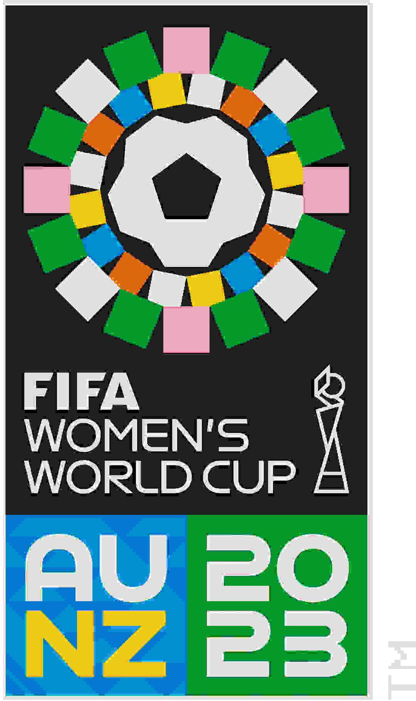

(Org) Imatge PNG(24-bit):

Imatge PNG (8-bit):
Imatge JPEG (Low):

Imatge JPEG (Medium):
Imatge JPEG (High):
Imatge GIF:
(Org) Imatge PNG(24-bit):
Imatge PNG (8-bit):
Imatge JPEG (Low):
Imatge JPEG (Medium):
Imatge JPEG (High):
Imatge GIF:
Answer: The JPEG (Low) format is the most optimal for this image, as it provides a good ratio between quality and file size.
Answer: Yes, it can be further reduced in size with certain compression techniques, but there may be a noticeable loss of quality.